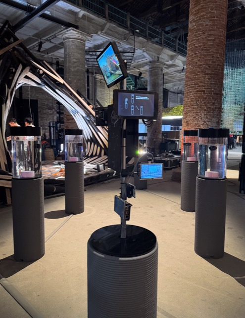
View of the installation Reservoirs of Venice, International Exhibition, Biennale Architettura 2025, Arsenale di Venezia.
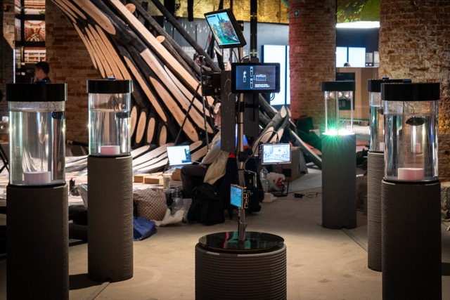
View of the installation "Reservoirs of Venice", International Exhibition, Biennale Architettura 2025, Arsenale di Venezia.
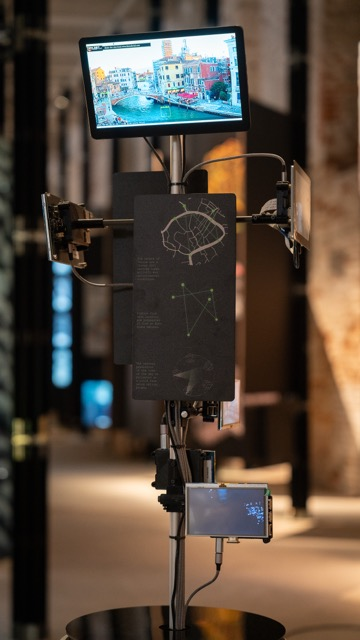
Screen column, using webcam views of Venice's canals as input data for the installation.
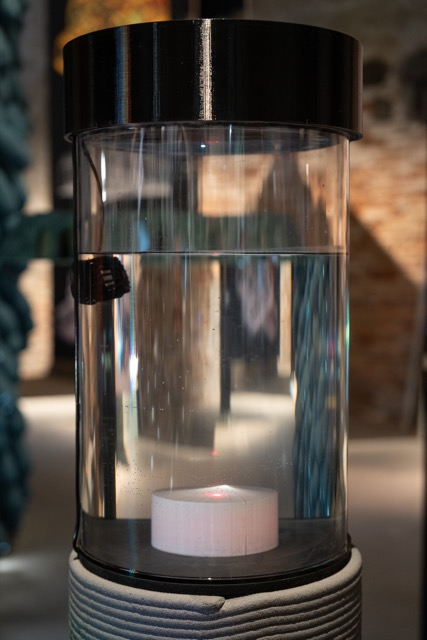
Reservoir column in idle mode.
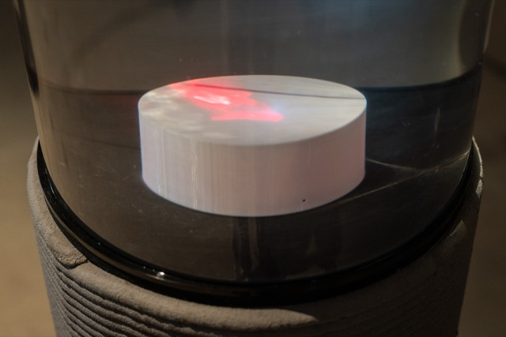
Detail of the laser display that visualizes water turnover in the reservoir column.
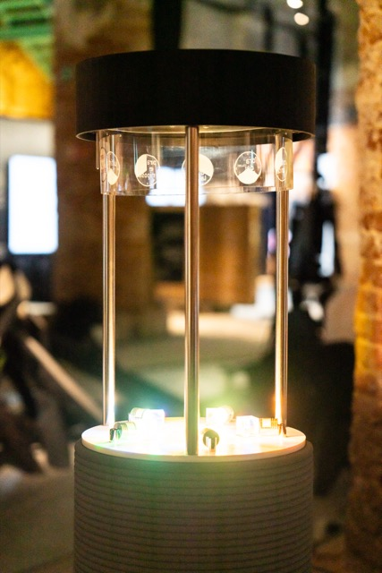
Output column with clock and crystal indicators.
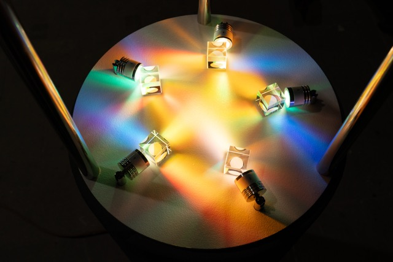
Output column, detail of crystal indicators, visualizing the learning of the resulting neural network.
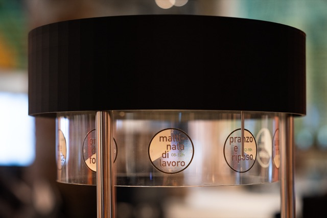
Output column, detail of the clock, showing the predicted time learned from the activity on the Venice canals.
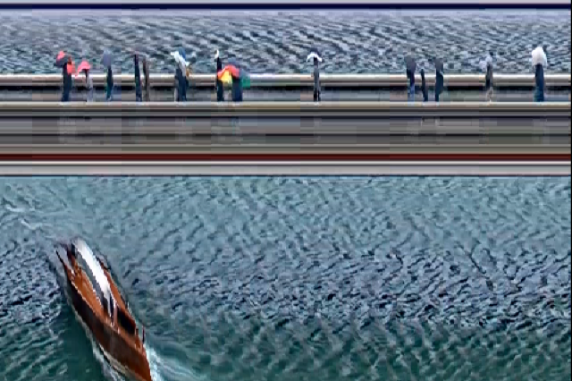
Slitscan view of wave patterns on Venice Canals.
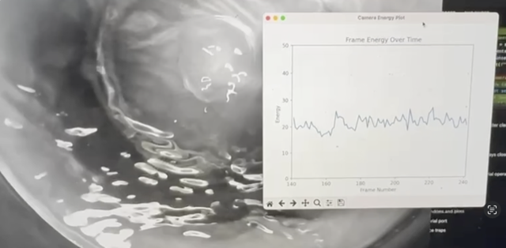
The system calculating the energy of the wave patterns in the reservoir.
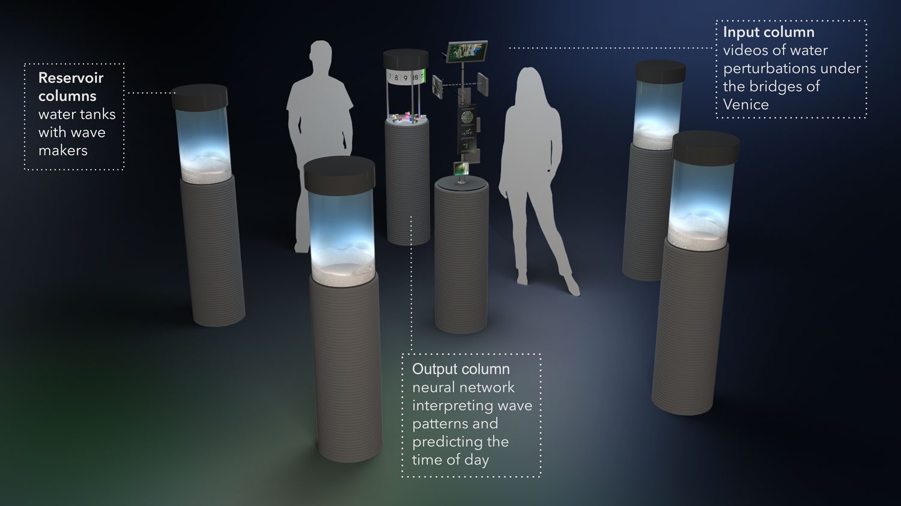
Rendering of the installation's main components